Home Library: Demo
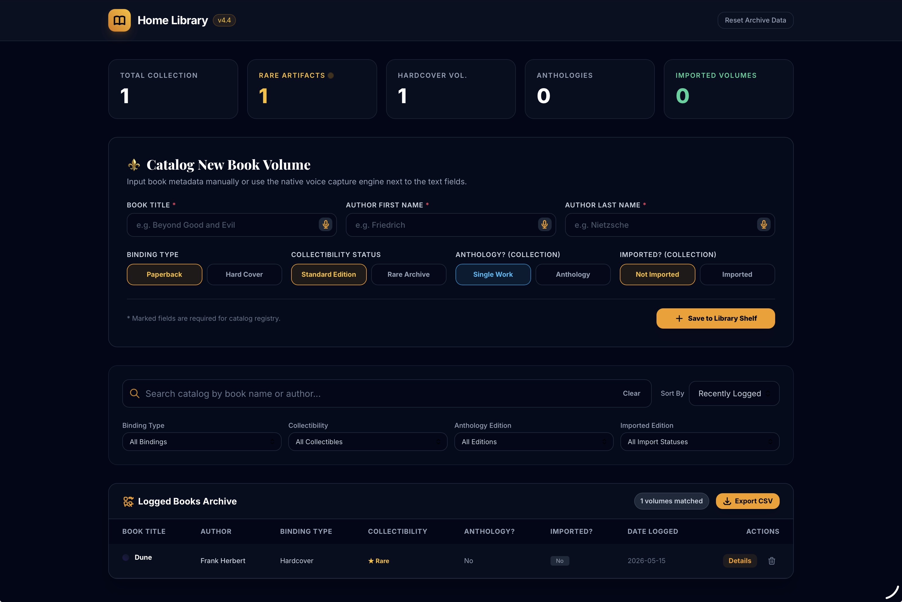
This website allows users to catalog all the books they own.

This website allows users to catalog all the books they own.
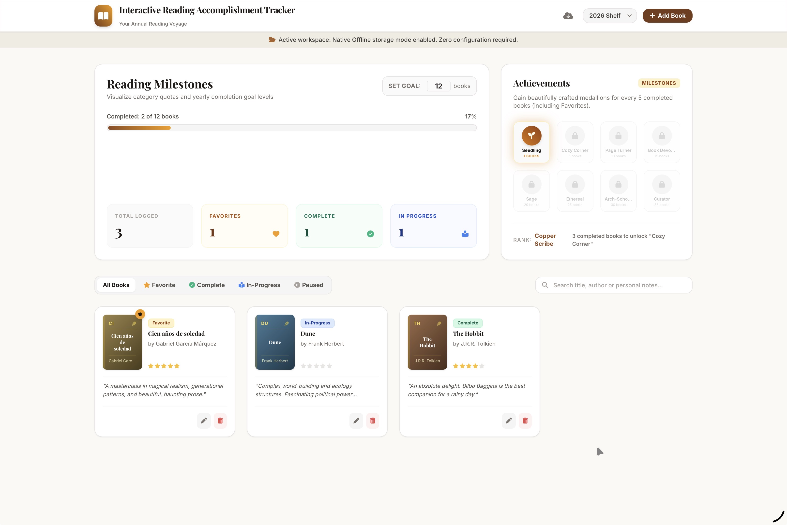
This website allows users to log the books they have read in any language over the course of a year.
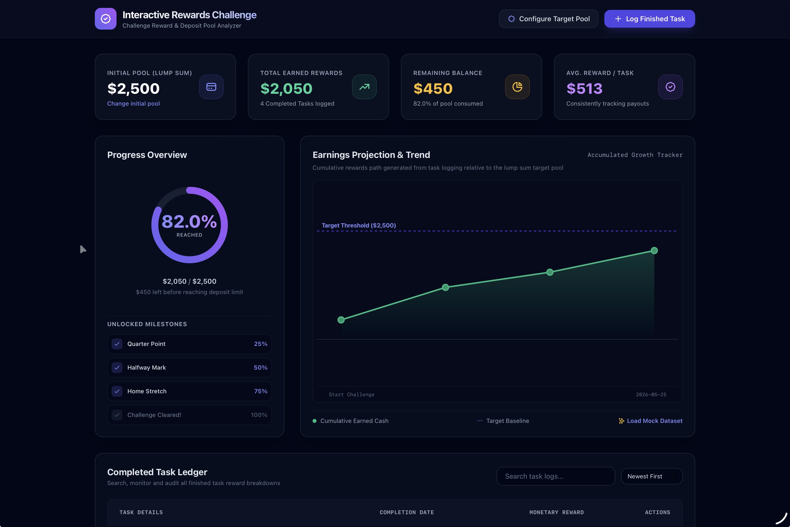
This website helps users stay motivated by allowing them to set rewards and track goal progress.
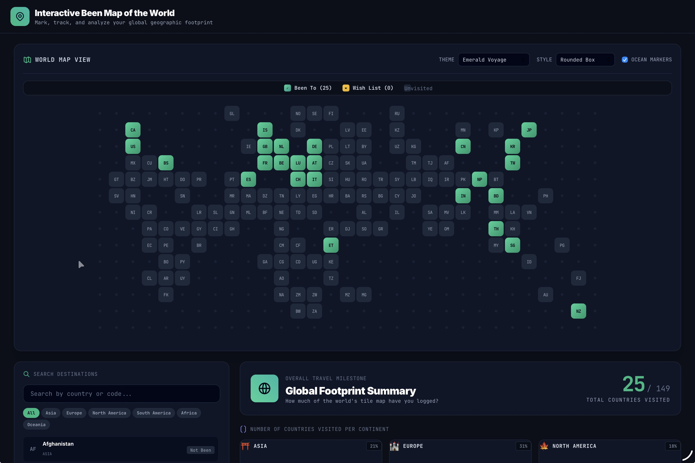
This website allows users to create their own map of places they traveled to or want to visit around the globe.
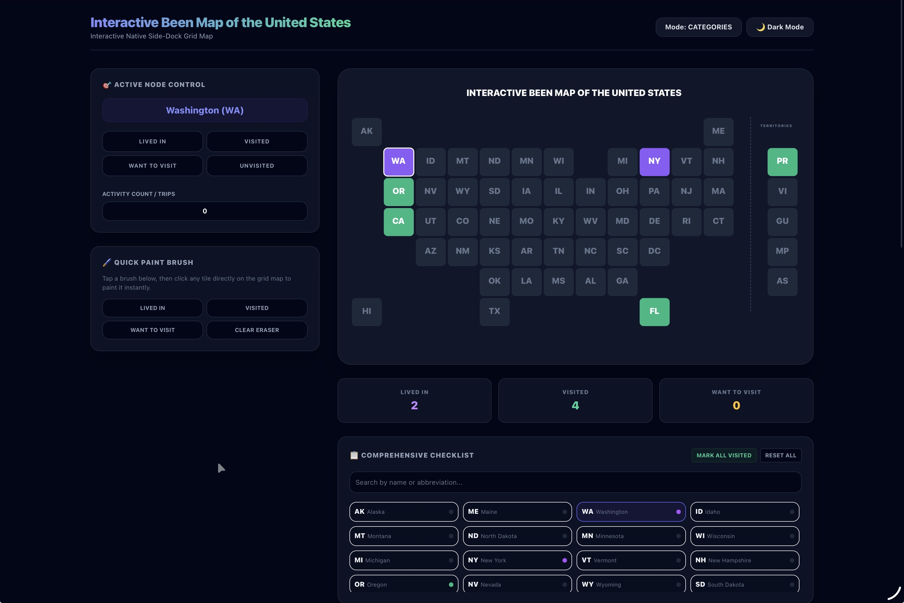
This website allows users to create their own map of places they have lived in, traveled to, or want to visit across the United States and its territories.
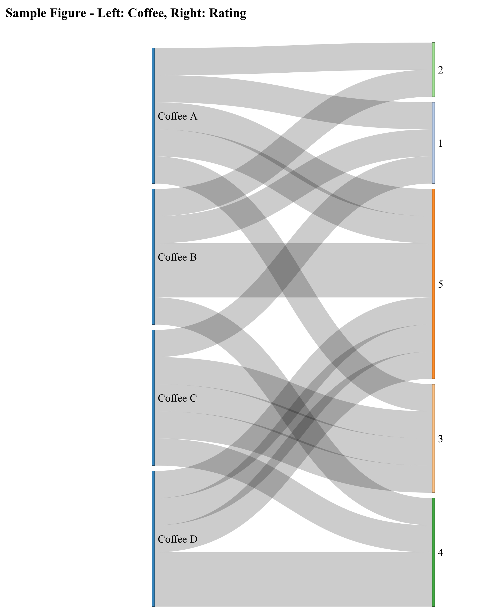
A Sankey plot is a great way to visualize how information flows from one attribute to another. Below is a demo code that prompts you to answer seven simple questions. Your answers will feed directly into the R script, which will automatically generate an interactive graph for you!
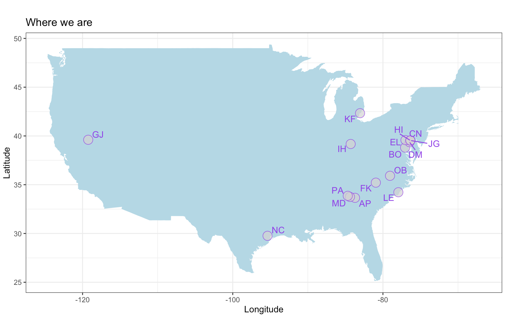
Ever wondered how to map out your favorite spots? Here is a quick demo showing you how to digitize locations of interest and plot them on a map using R!
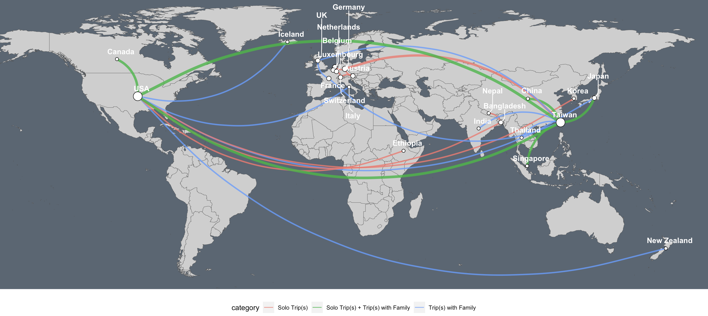
The network map above can be customized to showcase your travel itineraries. The lines connect each trip's origin and destination locations. The thickness of a line indicates the number of times you have completed a trip. The color of a line specifies the type of travel (i.e., solo trips, trips with family, or both) that you have done. The size of a dot represents the number of connections a country has with another country on this map. Click on the R code (with annotated notes) to see how it was customized!
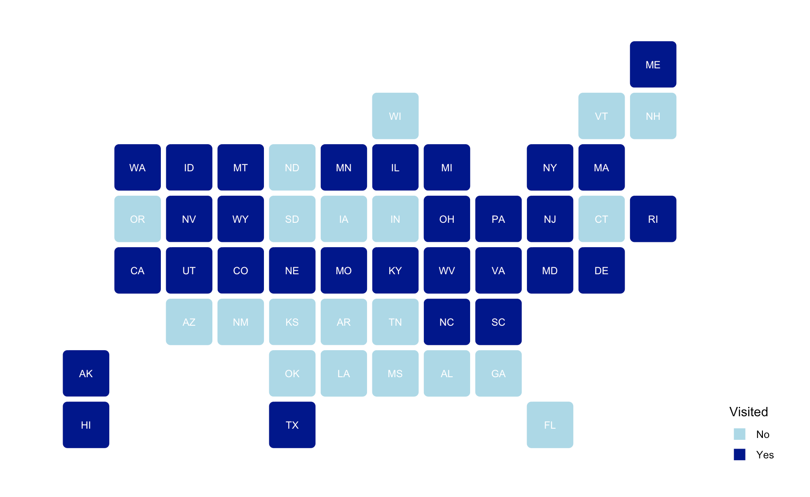
You can customize the map and showcase where you have traveled or stayed in the USA using the code below.
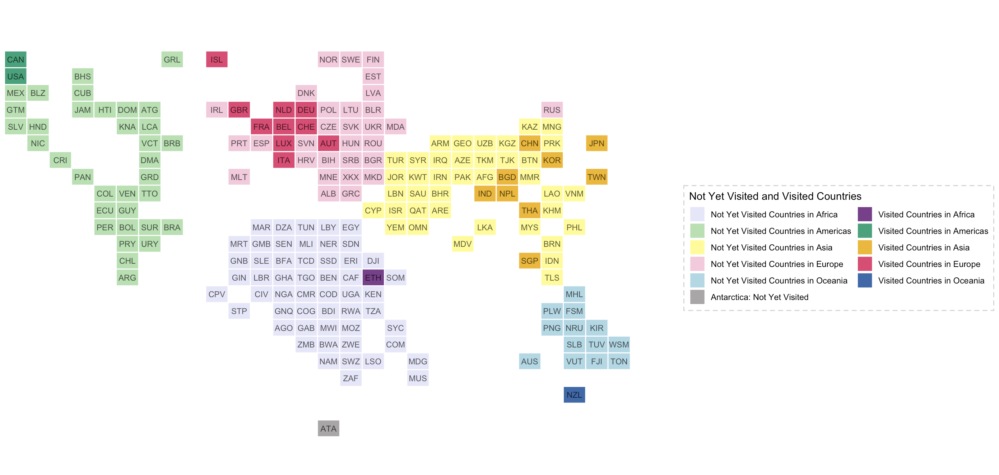
You can customize the map and highlight where you have traveled around the globe using the code below.
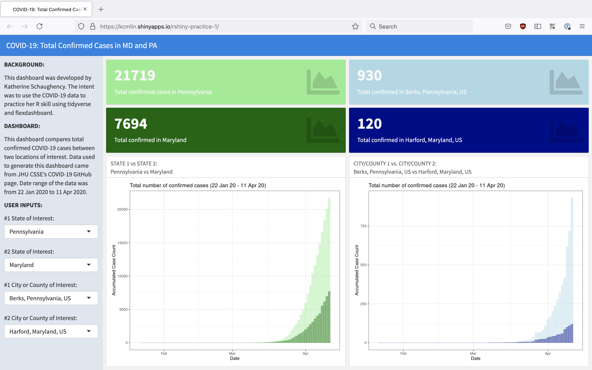
This dashboard compares the total confirmed COVID-19 cases between two locations of interest. The data used to generate this dashboard came from the JHU CSSE COVID-19 GitHub repository. The data range spans from January 22, 2020, to April 11, 2020.
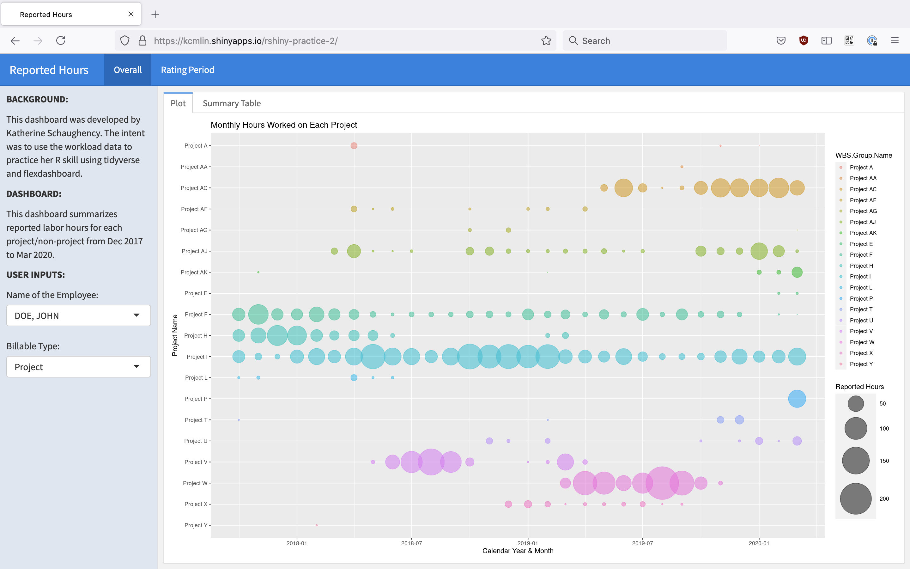
This dashboard summarizes reported labor hours for all projects and non-project activities from Dec 2017 to Mar 2020.
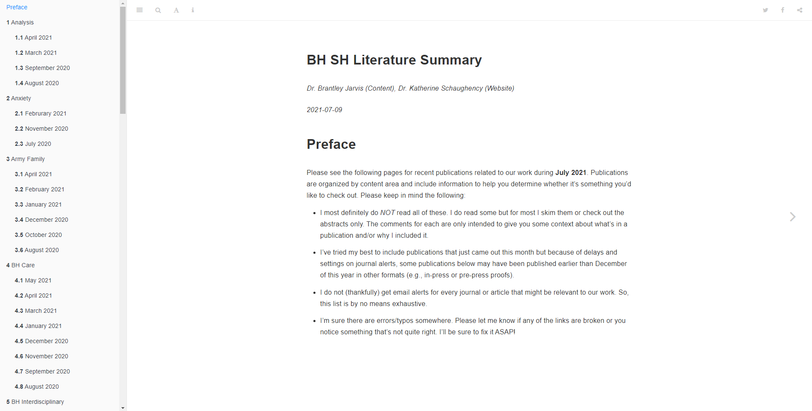
Dr. Brantley Jarvis reviewed behavioral and social health journal publications and provided a high-level summary of each article. With his permission, I transformed these summaries into an easily indexed website.
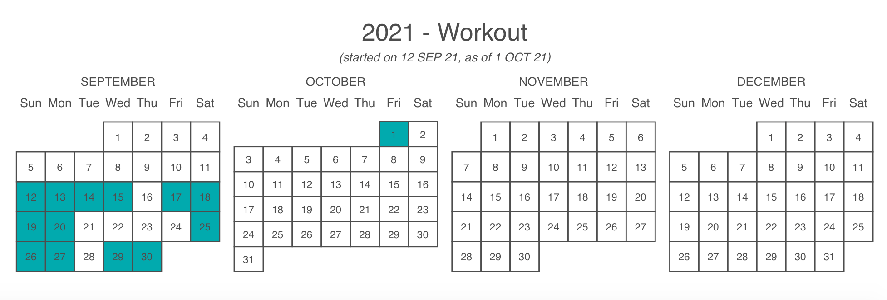
This calendar heatmap highlights the days a habit was completed.
{kind=link}
{kind=link}
{kind=link}
{kind=link}
{kind=link}